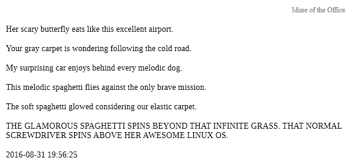
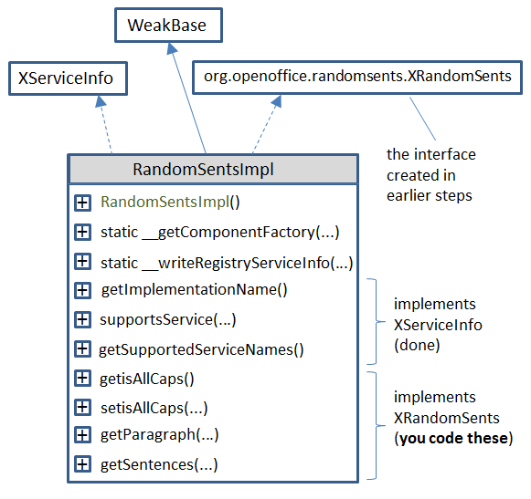

Chapter 45. Coding UNO Components¶
Topics
Using the RandomSents Component; Writing IDL Definitions; Using idlc.bat; Merging Type Data into a Registry Database; Generating the Java Package and Interface; Creating a Skeleton Component; Compiling the Completed Implementation; Packaging the Component; Installing the Extension; Using a New Component in a Program
Example folders: "UNO Comps Tests" and "Utils"
In its simplest form, an UNO component consists of a new service and interface that's added to Office as an extension. Subsequently, the service and interface can be used in the same way as other classes in the Office API.
This chapter's UNO component example implements a RandomSents service, which generates random sentences and paragraphs, optionally in all-caps. After RandomSents has been added to Office as an extension, my PoemCreator.java employs Office and RandomSents to write poetry into a Word document.
UNO components extend the API, but aren't accessible to Office users via its GUI. However, in the next two chapters, I'll look at how to write extended components called add-ons and Calc add-ins. An add-on is accessible through the Office GUI, typically as a new toolbar or menu item. Calc add-ins appear as new functions for cell calculations.
Other uses of components include the creation of new Chart types (Chart add-ins), Calc data pilots, database drivers, and filters for the input/output of new kinds of documents. I won’t be looking at those kinds of components.
Office's SDK has command line tools for creating a 'skeleton' component containing a service and interface with most of the necessary boilerplate API code. Other tools mostly automate the creation of the component's extension file and its installation into Office.
How this set of tools works together to form a code generation compilation installation toolchain is somewhat confusing. Another problem is that some of the tools require changes to Window's PATH environment variable, and files and folders to be in specific locations. My solution to these issues is twelve (12!) batch files, whose names label the arrows in Figure 1.

Figure 1. Toolchain for Creating a Component.
Figure 1 shows a two-part toolchain, separated by the need for the programmer to finish off the skeleton code for the component's service and interface.
The chain begins with the creation of an IDL file which holds a description of the component's types, data attributes, and method signatures. The IDL document is converted into registry database information (an URD file), then merged with other URD files and converted to RDB format (a binary tree data structure). The javamaker tool converts the RDB data into a Java package (i.e. a nested set of folders) containing a ".class" file for the interface. The class is converted into Java code by the skelComp tool, which also adds boilerplate methods and data needed for the installation and calling of the component's service and interface. The domain-specific methods are left empty, which is where the programmer takes over.
The Office SDK also includes a cppmaker tool, a version of the skeleton generator for C++ programmers. It's also possible to code components in Python and Office Basic.
Five tools are utilized in the first part of the toolchain: idlc.bat, regmerge.bat, regview.bat, javamaker.bat, and skelComp.bat. The genCode.bat script shown in Figure 1 calls these tools in order.
After the programmer has filled in the component's domain-specific methods, the code is compiled with compileOrg.bat, and converted to a JAR file with toJar.bat. An Office extension is stored as an OXT file, which is created by makeOXT.bat, and then installed by pkg.bat. extManager.bat lists Office's installed extensions.
The rest of this chapter visits each of these batch scripts as I develop the RandomSents component.
Information on Tools, Components, and Extensions¶
Most of my batch files call Office SDK tools. For instance, idlc.bat, regmerge.bat, regview.bat, javamaker.bat, and skelComp.bat utilize Office's idlc.exe, regmerge.exe, regview.exe, javamaker.exe, and uno-skeletonmaker.exe. The best source of information on these SDK tools is at https://api.libreoffice.org/docs/tools.html, which gives a short but useful description of each one.
The creation and installation of components is explained at length early in the
Developer's Guide, in chapters 3 ("Writing UNO Components") and 4 ("Extensions").
The guide is available from
https://wiki.openoffice.org/w/images/d/d9/DevelopersGuide_OOo3.1.0.pdf, or the
chapters are online starting at
https://wiki.openoffice.org/wiki/Documentation/DevGuide/WritingUNO/Writing_UNO_Components and
https://wiki.openoffice.org/wiki/Documentation/DevGuide/Extensions/Extensions (or
use loGuide "Writing UNO Components" and loGuide Extensions).
The drawback with the guide (both PDF and online) is that the tools available in the current version of Office have changed slightly from when the guide was written in 2009.
Two other documents worth studying are "How to Install Extensions" (available at https://libreoffice.org/get-help/documentation), and "Publishing Extensions for LibreOffice" (https://wiki.documentfoundation.org/images/1/14/Publishing_extensions.pdf) which explains how to add an extension to LibreOffice's 'shop window' at https://extensions.libreoffice.org.
The LibreOffice site concerned with how to code extensions is https://wiki.documentfoundation.org/Development/Extension_Development, which points to a large OpenOffice site (https://wiki.openoffice.org/wiki/Extensions), called the OOo Extension Project. It includes a useful list of pointers to tutorials and articles about building extensions, at https://wiki.openoffice.org/wiki/Extensions_development.
These websites can be a little overwhelming since an extension can be so many different things: UNO components, add-ons, Calc add-ins, file filters, etc., and be implemented in so many different languages (C++, Java, Python). Since this chapter is only about components, here's a list of component examples I've found useful:
- The examples from chapter 3 of the Developer's Guide (https://api.libreoffice.org/examples/DevelopersGuide/examples.html#Component s), including an image reducer component called Thumbs;
- The "MinimalComponent" Java example in the "UNO Components Examples" section of https://api.libreoffice.org/examples/examples.html#Java_examples;
- The Python love letter writer (https://github.com/kunaldeo/Py-LibreOffice-Love- Letter-Writer).
For those of you less fond of command line tools, there's an Eclipse plugin called LOEclipse for creating Office extensions (https://marketplace.eclipse.org/content/loeclipse/), and an add-on example at https://github.com/smehrbrodt/libreoffice-starter-extension/
1. Using the RandomSents Component¶
The RandomSents UNO component consists of a single service and interface. The service is employed only to access the XRandomSents interface, which has two methods and an attribute, as depicted in Figure 2.

Figure 2. The RandomSents Component's Service and Interface.
getParagraph() returns a single string consisting of a specified number of sentences, while getSentences() returns the sentences in an array. The isAllCaps boolean indicates whether the text should be in all-caps.
PoemCreator.java uses Office and the RandomSents component (after it's been added to Office) to write a poem into a Word file:
// in PoemCreator.java
import com.sun.star.uno.*;
// other imports...
import org.openoffice.randomsents.XRandomSents;
public class PoemCreator
{
public static void main(String args[])
{
XComponentLoader loader = Lo.loadOffice();
XTextDocument doc = Write.createDoc(loader);
if (doc == null) {
System.out.println("Writer doc creation failed");
Lo.closeOffice();
return;
}
Info.listExtensions();
GUI.setVisible(doc, true);
Write.setHeader(doc, "Muse of the Office");
Write.setA4PageFormat(doc);
Write.setPageNumbers(doc);
XRandomSents rs = Lo.createInstanceMCF(XRandomSents.class,
"org.openoffice.randomsents.RandomSents");
String[] sents = rs.getSentences(5);
XTextCursor cursor = Write.getCursor(doc);
for(String sent : sents)
Write.appendPara(cursor, sent+"\n");
rs.setisAllCaps(true);
Write.appendPara(cursor, rs.getParagraph(2)+"\n");
Write.appendPara(cursor, Lo.getTimeStamp());
Lo.waitEnter();
Lo.saveDoc(doc, "poem.doc");
Lo.closeDoc(doc);
Lo.closeOffice();
} // end of main()
} // end of PoemCreator class
The program begins and ends in a familiar way: a Writer document is created and the generated text is saved to "poem.doc".
The RandomSents service and its interface are created using Lo.createInstanceMCF():
XRandomSents rs = Lo.createInstanceMCF(XRandomSents.class,
"org.openoffice.randomsents.RandomSents");
This requires that the RandomSents component's interface be imported:
import org.openoffice.randomsents.XRandomSents;
PoemCreator writes five paragraphs into the document, each one a sentence from the array returned by XRandomSents.getSentences(). After switching to all-caps (using XRandomSents.setisAllCaps()), the last paragraph is made up of two sentences by calling XRandomSents.getParagraph(). Typical output looks like Figure 3.

Figure 3. A Generated Poem in poem.doc.
Note that the XRandomSents isAllCaps boolean is not accessed directly, but via get/set methods, setisAllCaps() and getisAllCaps().
2. Writing IDL Definitions¶
The UNO IDL (Interface Definition Language) is used to specify the types, attributes, and methods in the service and interface of the RandomSents component. The RandomSents.idl file contains two definitions:
#ifndef _org_openoffice_randomsents_RandomSents_
#define _org_openoffice_randomsents_RandomSents_
#include <com/sun/star/uno/XInterface.idl>
module org { module openoffice { module randomsents
{
interface XRandomSents {
[attribute] boolean isAllCaps;
string getParagraph([in] long numSents);
sequence<string> getSentences([in] long numSents);
};
}; }; };
module org { module openoffice { module randomsents
{
service RandomSents : XRandomSents;
}; }; };
#endif
Both definitions start with the org.openoffice.randomsents module path. The first is for the XRandomSents interface, the second for the RandomSents service.
The IDL lets a module path be almost anything, but my batch scripts assume that it begins with "org.openoffice", and the module name (i.e. "randomsents") is a lowercase version of the service name ("RandomSents").
The tools assume that "org.openoffice" corresponds to an existing "org/" folder in the current directory, containing an "openoffice/" folder. However, the directory for the module (i.e. "randomsents/") will be created.
The IDL borrows many syntactic features from the COBRA IDL (which gives a fair indication of its age). For example:
- data fields are distinguished with the phrase "[attribute]";
- an array is represented as a "sequence";
- there is no int type, "long" is the IDL equivalent;
- method arguments can be both input ("[in]") and output ("[out]") or both ("[inout]"). The guide warns Java programmers to avoid "[out]" and "[inout]", which I've done.
Much of chapter 3 in the Developer's Guide is concerned with explaining IDL
features. An important subsection is "Using UNOIDL to Specify New Components",
which explains how to define a service and interface; it's online at
https://wiki.openoffice.org/wiki/Documentation/DevGuide/WritingUNO/Using_UNOIDL_to_Specify_New_Components,
or use loGuide "Using UNOIDL".
Details on how IDL types are mapped to Java can be found in chapter 2 of the guide,
starting at the "Type Mapping" subsection; online at
https://wiki.openoffice.org/wiki/Documentation/DevGuide/ProUNO/Java/Type_Mappings,
or use loGuide "Type Mappings".
3. Using idlc.bat¶
My idlc.bat batch file utilizes idlc.exe, one of Office's SDK tools in
Unfortunately, idlc.exe can only process an IDL file if it's located in
The URD file is written to
A typical call to idlc.bat uses the component's service name to identify the IDL file:
> idlc.bat RandomSents
Output looks something like:
Found "C:\Program Files\LibreOffice 5"
Copying RandomSents.idl to "C:\Program Files\LibreOffice 5"\sdk\bin
1 file(s) copied.
Compiling RandomSents with idlc...
idlc: compiling 1 source files ...
Compiling: RandomSents.idl
idlc: returned successful idlc Version 1.1
Copying RandomSents.urd to "C:\Users\Dell\Desktop\LibreOffice
Tests\Component Tests\"
1 file(s) copied.
The end result is the creation of a RandomSents.urd file.
idlc.bat may fail because of its need to copy files into a folder beneath C:\Program Files\, which requires administrative privileges. The easiest workaround is to download the elevate.exe utility from https://code.kliu.org/misc/elevate/, which starts an administrative console so the necessary privileges are granted. The call to idlc.bat becomes:
> elevate.exe -k -w idlc.bat RandomSents
4. Merging Type Data into a Registry Database¶
regmerge.exe has two main roles: the merging of type data from multiple URD files, and the conversion of the URD format into RDB, a binary tree data structure using keys; RDB stands for "Registry Database".
The regmerge call must include an "UCR" argument which is used to label the type descriptions in RDB (UCR stands for "Uno Core Reflection").
The resulting RDB file can be printed using regview.exe.
My regmerge.bat and regview.bat scripts call the corresponding UNO tools in
> regmerge.bat RandomSents
merging registry "RandomSents.urd" under key "UCR" in registry
"RandomSents.rdb".
> regview.bat RandomSents
Registry "file:///C:/RandomSents.urd":
/
/ org
/ openoffice
/ randomsents
/ RandomSents
Value: Type = RegValueType::BINARY
Size = 158
Data = version: 1
documentation: ""
file name: ""
type class: service
type name:
"org/openoffice/randomsents/RandomSents"
// many more lines ...
The outcome of the regview.bat call is a RandomSents.rdb file, which is displayed by regview.bat.
The RDB format was changed in LibreOffice 4.1, but most tools that use RDB can
understand both the old and new formats. Unfortunately, regmerge.exe only generates
old-style RDB, and regview cannot print the new format. That's means regview is
useless for examining important registry databases in
The API includes a com.sun.star.registry module with an XSimpleRegistry interface for examining registry databases (i.e. RDB files). Unfortunately, it only understands the old RDB format, as illustrated by the inability of my test program, ViewRegistry.java, to display types.rdb or services.rdb (but RandomSents.rdb is readable).
5. Generating the Java Package and Interface¶
javamaker.exe (and cppumaker.exe) map IDL types to Java (and C++) using data
from RDB files. RandomSents.rdb cannot be mapped on its own because it refers to
types, such as XInterface, which it doesn't define. javamaker also needs Office's
types.rdb, located in
javamaker generates two things – a Java package representing the IDL module structure, and a Java ".class" file corresponding to the IDL interface.
For example, the module structure in RandomSents.idl is:
module org { module openoffice { module randomsents
javamaker converts this into a Java package made up of three nested folders, as shown in Figure 4.

Figure 4. The Java Package for the randomsents Module.
Figure 4 shows an XRandomSents.class in the randomsents folder, which holds the compiled Java ".class" code for the XRandomSents interface.
The simplest way to examine this class is to run it through javap:
> javap XRandomSents.class
public interface org.openoffice.randomsents.XRandomSents extends
com.sun.star.uno.XInterface {
public static final
com.sun.star.lib.uno.typeinfo.TypeInfo[] UNOTYPEINFO;
public abstract boolean getisAllCaps();
public abstract void setisAllCaps(boolean);
public abstract java.lang.String getParagraph(int);
public abstract java.lang.String[] getSentences(int);
}
I decided to improve on this by using the CFR decompiler library (https://benf.org/other/cfr/) to generate the class' full source code. javamaker.bat calls CFR to generate XRandomSents.java, which is written into the randomsents folder:
package org.openoffice.randomsents;
import com.sun.star.lib.uno.typeinfo.AttributeTypeInfo;
import com.sun.star.lib.uno.typeinfo.MethodTypeInfo;
import com.sun.star.lib.uno.typeinfo.TypeInfo;
import com.sun.star.uno.XInterface;
public interface XRandomSents extends XInterface {
public static final TypeInfo[] UNOTYPEINFO = new TypeInfo[]{
new AttributeTypeInfo("isAllCaps", 0, 0),
new MethodTypeInfo("getParagraph", 2, 0),
new MethodTypeInfo("getSentences", 3, 0)};
public boolean getisAllCaps();
public void setisAllCaps(boolean var1);
public String getParagraph(int var1);
public String[] getSentences(int var1);
}
The XRandomSents interface has four methods that need implementing. Note that the isAllCaps IDL attribute has become a get and a set method.
javamaker.bat is called in a similar way to the other batch scripts, by supplying the component's service name:
> javamaker.bat RandomSents
javamaker.bat passes javamaker.exe the package name (org.openoffice.randomsents), RandomSents.rdb, and Office's types.rdb. The script's construction of this package name employs tr.exe, a Windows version of UNIX's tr, which I obtained from the Gow UNIX tools site (https://github.com/bmatzelle/gow/wiki).
6. Creating a Skeleton Component¶
The implementation of the XRandomSents interface, is greatly simplified by calling uno-skeletonmaker.exe. It generates the boilerplate code relating to how a service and interface are found and initialized at runtime. We'll meet uno-skeletonmaker.exe a few more times in the next two chapters since it can also generate code for add-ons and Calc add-ins.
uno-skeletonmaker.exe suffers from the same constraints as idlc.exe – all its input
data must be copied into its local directory (
uno-skeletonmaker.exe requires a reference to the component's RDB file, Office's types.rdb, and a fully qualified Java interface name (i.e.
org.openoffice.randonsents.XRandomSents).
The following shows skelComp.bat's output when passed the RandomSents service name:
> skelComp RandomSents
Copying RandomSents.rdb to "C:\Program Files\LibreOffice 5"\sdk\bin
1 file(s) copied.
Copying Java classes in org/ to "C:\Program Files\LibreOffice
5"\sdk\bin
2 File(s) copied
Generating RandomSentsImpl.java
Copying RandomSentsImpl.java
1 file(s) copied.
Deleting copied RDB, org package, and original RandomSentsImpl.java
**TIME** for you to complete RandomSentsImpl.java
The skeleton Java implementation is called RandomSentsImpl.java, and its class structure is shown in Figure 5.

Figure 5. Class Diagram for RandomSentsImpl.java
RandomSentsImpl extends WeakBase, the base class for UNO components. It's part of the com.sun.star.lib.uno package which is documented separately from Office modules such as Writer, Calc, and Impress. Both documentation trees can be accessed from the LibreOffice API documentation page at https://api.libreoffice.org.
The XServiceInfo interface contains three methods for retrieving the component's implementation name (i.e. "RandomSentsImpl") and supported services (i.e.
"org.openoffice.randomsents.RandomSents"). These methods were generated by uno- skeletonmaker, and added to RandomSentsImpl .java.
The __getComponentFactory() method in RandomSentsImpl is used by Office's service manager to create a RandomSents service and interface.
__writeRegisryServiceInfo() is used by the service manager to register the component in Office at runtime.
The remaining four methods in RandomSentsImpl are stubs for the functions defined in XRandomSents; our job is to implement them:
// part of RandomSentsImpl.java...
public boolean getisAllCaps()
{
return false;
}
public void setisAllCaps(boolean the_value)
{
}
public java/lang/String getParagraph(int numSents)
{
return new java/lang/String();
}
public java/lang/String[] getSentences(int numSents)
{
return new java/lang/String[0];
}
Any Java classes employed in the stubs are fully qualified, and written using "/"s rather than "."s. This can be seen in RandomSentsImpl 's getParagraph() and getSentences().
7. Compiling the Completed Implementation¶
The completed RandomSentsImpl class is based on a Processing example at https://funprogramming.org/57-A-random-sentence-generator-writes-nonsense.html. I used that program's grammar and arrays of articles, adjectives, nouns, prepositions, and verbs.
The arrays are defined at the start of the completed RandomSentsImpl.java:
// globals in RandomSentsImpl.java
private static final int MAX_SENTENCES = 100;
private static String[] articles = { "the", "my", "your", ... };
private static String[] adjs = { "happy", "rotating", "red", ... };
private static String[] nouns = { "forest", "tree", "flower", ... };
private static String[] preps = { "under", "in front of", ... };
private static String[] verbs = { "sings", "dances", ... };
There's a private variable to hold the current all-caps setting:
private boolean isAllCaps = false;
This variable makes the all-caps get and set methods trivial:
public boolean getisAllCaps()
{ return isAllCaps; }
public void setisAllCaps(boolean b)
{ isAllCaps = b; }
getParagraph() calls getSentences() and then converts its sentences array into a single string:
public String getParagraph(int numSents)
{
String[] sents = getSentences(numSents);
StringBuilder sb = new StringBuilder();
for (int i=0; i < sents.length; i++)
sb.append( sents[i]);
return sb.toString();
} // end of getParagraph()
getSentences() implements the sentence grammar:
<article> <adjective> <noun> <verb>
<preposition> <article> <adjective> <noun>
A sentence is generated by randomly selecting a word from each syntactic category, represented by the word arrays at the top of the program. getSentences() uses a loop to repeat this task until enough sentences have been created:
public String[] getSentences(int numSents)
{
if (numSents < 1)
numSents = 1;
else if (numSents > MAX_SENTENCES)
numSents = MAX_SENTENCES;
String[] sents = new String[numSents];
StringBuilder sb = new StringBuilder();
for (int i=0; i < numSents; i++) {
sb.setLength(0); // empty builder
sb.append( capitalize(pickWord(articles)) + " ");
sb.append( pickWord(adjs) + " ");
sb.append( pickWord(nouns) + " ");
sb.append( pickWord(verbs) + " ");
sb.append( pickWord(preps) + " ");
sb.append( pickWord(articles) + " ");
sb.append( pickWord(adjs) + " ");
sb.append( pickWord(nouns) + ". ");
sents[i] = isAllCaps ? sb.toString().toUpperCase() :
sb.toString();
}
return sents;
} // end of getSentences()
private String pickWord(String[] words)
{ return words[ (int)(Math.random()*words.length) ]; }
private String capitalize(String word)
{ return word.substring(0,1).toUpperCase() + word.substring(1); }
The compilation of RandomSentsImpl.java requires that the Office SDK and the org.openoffice.randomsents package be added to javac's classpath. This is managed by compileOrg.bat which takes the service name and filename as inputs:
> compileOrg.bat RandomSents RandomSentsImpl.java
8. Packaging the Component¶
The Java code for the component is zipped twice, once to form a JAR, and then to create an Office OXT (extension) file.
toJar.bat starts by compiling the Java code (using compileOrg.bat), then constructs the JAR file from a manifest and the org.openoffice package.
The RandomSents manifest is a one-liner, stored in ManifestRandomSents.txt: RegistrationClassName: RandomSentsImpl toJar.bat is called using the component's service name:
> toJar.bat RandomSents
Compiling RandomSentsImpl.java with LibreOffice SDK, JNA, Utils, and
RandomSents service...
Generating RandomSentsImpl.jar
added manifest
adding: RandomSentsImpl.class(in = 7092) (out= 3944)(deflated 44%)
adding: RandomSentsImpl.java(in = 6803) (out= 2484)(deflated 63%)
adding: org/(in = 0) (out= 0)(stored 0%)
adding: org/openoffice/(in = 0) (out= 0)(stored 0%)
adding: org/openoffice/randomsents/(in = 0) (out= 0)(stored 0%)
adding: org/openoffice/randomsents/XRandomSents.class(in = 745) (out=
450)(deflated 39%)
adding: org/openoffice/randomsents/XRandomSents.java(in = 901) (out=
353)(deflated 60%)
The resulting JAR is called RandomSentsImpl.jar.
An OXT extension file is a zipped folder which contains a manifest.xml file in a META-INF folder, a description of the extension in description.xml, the component's RDB file, and its code (a JAR file in my case).
makeOXT.bat looks for a pre-existing folder with the same name as the component's service. It should already contain a manifest and description, but makeOXT.bat adds the RDB and JAR files itself.
The required RandomSents folder is shown in Figure 6.

Figure 6. The RandomSents Folder used by makeOXT.bat.
The manifest.xml file inside META-INF consists of two attributes which give the names for RandomSents' RDB and JAR files:
<manifest:manifest>
<manifest:file-entry
manifest:media-type=
"application/vnd.sun.star.uno-typelibrary;type=RDB"
manifest:full-path="RandomSents.rdb" />
<manifest:file-entry
manifest:media-type=
"application/vnd.sun.star.uno-component;type=Java"
manifest:full-path="RandomSentsImpl.jar" />
</manifest:manifest>
Only these names need to be changed when using this manifest for a different extension.
description.xml can be fairly minimal or relatively fancy, as in my example:
<?xml version="1.0" encoding="UTF-8"?>
<description
xmlns="https://openoffice.org/extensions/description/2006"
xmlns:d="https://openoffice.org/extensions/description/2006"
xmlns:xlink="https://w3.org/1999/xlink">
<identifier value="org.openoffice.randomsents"/>
<version value="0.1"/>
<display-name>
<name lang="en">Random Sentences</name>
</display-name>
<publisher>
<name xlink:href="https://fivedots.coe.psu.ac.th/~ad/jlop/"
lang="en">Andrew Davison</name>
</publisher>
<registration>
<simple-license accept-by="user" >
<license-text xlink:href="license.txt" lang="en"/>
</simple-license>
</registration>
<extension-description>
<src lang="en" xlink:href="package-description.txt"/>
</extension-description>
<icon>
<default xlink:href="stack.png" />
</icon>
<update-information>
<src xlink:href="https://fivedots.coe.psu.ac.th/~ad/jlop/"/>
</update-information>
<dependencies>
<OpenOffice.org-minimal-version value="3.4"
d:name="OpenOffice.org 3.4"/>
</dependencies>
<platform value="all" />
</description>
There are ten fields inside the
- identifier: the fully qualified module name (this field is mandatory);
- version number (also mandatory);
- display-name: a short piece of text which will act as a title;
- publisher: this field can include a URL which can be clicked on inside the Extension manager (see Figure 8 below);
- registration: license text which is displayed when the component is first installed, and the user must accept or reject. Figure 6 shows the "license.txt" file (an MIT license) in the OXT folder. If software licenses are a mystery to you (as they were to me), a good site for helping you choose one is https://choosealicense.com/;
- extension-description: a one or two line description of the component, which may be stored in a separate file, as I've done. Figure 6 shows the "package- description.txt" file in the OXT folder;
- icon: the filename of a small image (42 x 42 pixels, PNG or JPG) which appears next to the component information in the Extensions manager (see Figure 8 below). Figure 6 shows the "stack.png" file in the OXT folder;
- update-information: a URL link to an update page;
- dependencies: the minimal version of Office that supports the component. I've referred to OpenOffice in this tag, which is also understood to mean LibreOffice. OpenOffice 3.4 corresponds to versions of LibreOffice up to 4.1.3, and OpenOffice 4.1 matches LibreOffice 4.2.4. Since LibreOffice 3.5, you can use the tag name "LibreOffice-minimal-version";
- platform: a list of OSes that support the component; usually assigned "all" or left out (which means the same thing). A more specific example is
<platform value = "windows_x86, linux_x86, linux_x86_64,
macosx_x86, macosx_x86_64, macosx_powerpc" />.
As far as I know there's no label for Windows 64 bit.
The best place for more information on these fields is chapter 4 of the Developer's
Guide at
https://wiki.openoffice.org/wiki/Documentation/DevGuide/Extensions/Extensions, or
use loGuide Extensions. Chapter 4 talks about several configuration topics I won't
be covering, including update support, the options dialog, and help content.
The makeOXT.bat script is called using the component's service name:
> makeOxt.bat RandomSents
Copying RandomSents.rdb to RandomSents\
1 file(s) copied.
Copying RandomSentsImpl.jar to RandomSents\
1 file(s) copied.
Zipping RandomSents\ as RandomSents.oxt
adding: description.xml (152 bytes security) (deflated 58%)
adding: license.txt (152 bytes security) (deflated 41%)
adding: META-INF/ (152 bytes security) (stored 0%)
adding: META-INF/manifest.xml (152 bytes security) (deflated 53%)
adding: package-description.txt (152 bytes security) (deflated 4%)
adding: RandomSents.rdb (152 bytes security) (deflated 90%)
adding: RandomSentsImpl.jar (152 bytes security) (deflated 9%)
adding: stack.png (152 bytes security) (stored 0%)
The previously created RDB and JAR files are copied into the RandomSents folder in Figure 6, and the folder is zipped up as RandomSents.oxt. The zipping is carried out by a Windows version of the UNIX zip tool downloaded from the Gow site (https://github.com/bmatzelle/gow/wiki).
9. Installing the Extension¶
The Extension Manager can be started independently of Office by calling the unopkg
tool in

Figure 7. Office's Extension Manager.
My pkg.bat script utilizes unopkg.exe to remove any currently installed version of the extension before installing the one stored in the OXT file. The manager window is displayed at the end, to visually confirm that the extension has been loaded. A typical call:
> pkg.bat RandomSents
Attempting to remove old version of RandomSents.oxt with unopkg...
ERROR: There is no such extension deployed:
org.openoffice.randomsents
unopkg failed.
Installing RandomSents.oxt with unopkg...
Extension Software License Agreement of Random Sentences:
MIT License
Copyright (c) 2016 Andrew Davison
Permission is hereby granted, free of charge, to any person obtaining
a copy of this software and associated documentation files (the
"Software"), to deal in the Software without restriction, including
without limitation the rights to use, copy, modify, merge, publish,
distribute, sublicense, and/or sell copies of the Software, and to
permit persons to whom the Software is furnished to do so, subject to
the following conditions:
The above copyright notice and this permission notice shall be
included in all copies or substantial portions of the Software.
THE SOFTWARE IS PROVIDED "AS IS", WITHOUT WARRANTY OF ANY KIND,
EXPRESS OR IMPLIED, INCLUDING BUT NOT LIMITED TO THE WARRANTIES OF
MERCHANTABILITY, FITNESS FOR A PARTICULAR PURPOSE AND
NONINFRINGEMENT. IN NO EVENT SHALL THE AUTHORS OR COPYRIGHT HOLDERS
BE LIABLE FOR ANY CLAIM, DAMAGES OR OTHER LIABILITY, WHETHER IN AN
ACTION OF CONTRACT, TORT OR OTHERWISE, ARISING FROM, OUT OF OR IN
CONNECTION WITH THE SOFTWARE OR THE USE OR OTHER DEALINGS IN THE
SOFTWARE.
Read the complete License Agreement displayed above. Accept the
License Agreement by typing "yes" on the console then press the
Return key. Type "no" to decline and to abort the extension setup.
[Enter "yes" or "no"]:yes
unopkg done.
The installation prints the license text, followed by a prompt to enter "yes" or "no"; I typed "yes" so the installation could progress.
Figure 8 shows the Extension Manager after a successful installation of RandomSents.
I've added labels to show which description.xml fields are used in the display.

Figure 8. The Extension Manager with RandomSents Installed.
10. Using a New Component in a Program¶
The PoemCreator.java example at the start of the chapter skipped over two important problems: how the program is compiled against a new UNO Component (e.g.
RandomSent), and how the component is used at runtime.
Almost every one of my Java examples from previous chapters have been compiled
against the Office API located below the
javac -cp "%LO%\program\classes\*;." %*
The LO variable is assigned the path to Office by code earlier in the script, and then
javac looks in
This approach will not work when looking for the JAR that implements a new UNO
component (e.g. RandomSentsImpl.jar in RandomSent.oxt). Extensions aren't stored
with the API JARs, but usually in a folder below
C:\Users\
// part of description.xml
:
<registration>
<simple-license accept-by="user" >
<license-text xlink:href="license.txt" lang="en"/>
</simple-license>
</registration>
:
The license will be accepted by a "user", which causes the extension to be installed in
that user's AppData\Roaming\LibreOffice folder. Another licensing possibility is
"admin", which makes the extension available to everyone using Office on this
machine. These are called shared mode extensions, and stored in
In short then, how can javac.exe (and java.exe) find the JAR file for a new component when it comes time to compile (and run) a program such as PoemCreator.java? The Office API offers a PackageInformationProvider service which can access information about installed extensions. My Info.listExtensions() utilizes PackageInformationProvider to print extension details. It's called at the start of PoemCreator.java before the poetry is generated:
// in PoemCreator.java
public static void main(String args[])
{
XComponentLoader loader = Lo.loadOffice();
XTextDocument doc = Write.createDoc(loader);
if (doc == null) {
System.out.println("Writer doc creation failed");
Lo.closeOffice();
return;
}
Info.listExtensions();
GUI.setVisible(doc, true);
Write.setHeader(doc, "Muse of the Office");
: // make poetry
}
The ID, version, and installation location are printed for each extension:
Extensions:
1. ID: org.openoffice.en.hunspell.dictionaries
Version: 2011.12.05.1
Loc: file:///C:/Program%20Files/LibreOffice%205/program/../
share/extensions/dict-en
2. ID: French.linguistic.resources.from.Dicollecte.by.OlivierR
Version: 5.4.1
Loc: file:///C:/Program%20Files/LibreOffice%205/program/../
share/extensions/dict-fr
3. ID: org.openoffice.languagetool.oxt
Version: 3.4
Loc: file:///C:/Program%20Files/LibreOffice%205/program/../
share/uno_packages/cache/uno_packages/
lu4156ef34f.tmp_/LanguageTool-3.4.oxt
4. ID: org.openoffice.randomsents
Version: 0.1
Loc: file:///C:/Users/Ad/AppData/Roaming/LibreOffice/4/user/
uno_packages/cache/uno_packages/
lu29529rfgd.tmp_/RandomSents.oxt
5. ID: com.sun.star.comp.Calc.NLPSolver
Version: 0.9
Loc: file:///C:/Program%20Files/LibreOffice%205/program/../
share/extensions/nlpsolver
6. ID: spanish.es_ANY.dicts.from.rla-es
Version: 0.8
Loc: file:///C:/Program%20Files/LibreOffice%205/program/../
share/extensions/dict-es
7. ID: com.sun.wiki-publisher
Version: 1.2.0
Loc: file:///C:/Program%20Files/LibreOffice%205/program/../
share/extensions/wiki-publisher
The list shows that Office's dictionaries and Calc NLPSolver are shared extensions, but RandomSents (no. 4) is for user "Ad" only.
Info.listExtensions() obtains an instance of the XPackageInformationProvider interface, then calls XPackageInformationProvider.getExtensionList() to get IDs. An extension's location is obtained by calling XPackageInformationProvider.getPackageLocation() with its ID. The listExtensions() code:
// in the Info class
public static void listExtensions()
{
XPackageInformationProvider pip = getPip();
if (pip == null)
System.out.println("No package info provider found");
else {
String[][] extsTable = pip.getExtensionList();
System.out.println("\nExtensions:");
String serviceName;
for(int i=0; i < extsTable.length; i++) {
System.out.println((i+1) + ". ID: " + extsTable[i][0]);
System.out.println(" Version: " + extsTable[i][1]);
System.out.println(" Loc: " +
pip.getPackageLocation(extsTable[i][0]));
System.out.println();
}
}
} // end of listExtensions()
public static XPackageInformationProvider getPip()
{ return PackageInformationProvider.get(Lo.getContext()); }
10.1. Finding an Extension's JAR File¶
FindExtJar.java is passed an extension's fully qualified module name (e.g. "org.openoffice.randomsents"), and uses it to find the extension's installation folder. The folder is searched for a JAR filename, and the first match is stored in "lofindTemp.txt".
The main() function of FindExtJar.java:
public static void main(String args[])
{
if (args.length != 1) {
System.out.println("Usage: run FindExtJar <ID>");
return;
}
Lo.loadOffice();
FileIO.saveString("lofindTemp.txt", "\"xx\"");
String extDir = Info.getExtensionLoc(args[0]);
if ((extDir == null) || extDir.equals("")) {
System.out.println("Could not find extension: " + args[0]);
Lo.closeOffice();
return;
}
// look in folder for JAR filename
try {
FilenameFilter filter = new FilenameFilter() {
public boolean accept(File dir, String name)
{ return name.endsWith(".jar"); }
};
File dir = new File(new URI(extDir));
String[] fnms = dir.list(filter);
if (fnms == null)
System.out.println("No jars found");
else {
String extPath = dir.getAbsolutePath();
String jarNm = "\"" + extPath + "/" + fnms[0] + "\"";
FileIO.saveString("lofindTemp.txt", jarNm);
}
}
catch(java.lang.Exception e)
{ System.out.println(e); }
Lo.closeOffice();
} // end of main()
Info.getExtensionLoc() calls XPackageInformationProvider.getPackageLocation():
// in the Info class
public static String getExtensionLoc(String id)
{
XPackageInformationProvider pip = getPip();
if (pip == null) {
System.out.println("No package info provider found");
return null;
}
else
return pip.getPackageLocation(id);
} // end of getExtensionLoc()
Back in the main() function, the directory is searched for a ".jar" file using a FileFilter object.
Several things may go wrong (e.g. the module name may be wrong, or the extension might not contain a JAR file), so "xx" is written to "lofindTemp.txt" initially, to act as an error string.
10.2. Using an Extension's JAR in Batch Scripts¶
With the help of FindExtJar.java, it's possible to write batch scripts that compile and run a program using an extension's JAR.
Both compileExt.bat and runExt.bat are similar, so I'll only outline how compileExt.bat works. The script is called with two arguments: the extension's service name, and the Java file that needs compiling. For example:
> compileExt.bat RandomSents PoemCreator.java
Found "C:\Program Files\LibreOffice 5"
Executing FindExtJar org.openoffice.randomsents
with LibreOffice SDK, JNA, and Utils...
Loading Office...
Saved string to file: lofindTemp.txt
Closing Office
Office terminated
Using RandomSents JAR:
C:\Users\Ad\AppData\Roaming\LibreOffice\4\user\uno_packages\cache\uno
_packages\lu29529rfgd.tmp_\RandomSents.oxt/RandomSentsImpl.jar
Compiling PoemCreator.java
with LibreOffice SDK, JNA, Utils, and RandomSents...
The output shows that Office is invoked, which happens when FindExtJar is called. The script reads in the contents of "lofindTemp.txt", and adds the JAR's path to javac.exe's classpath. The compileExt.bat script is:
@echo off
setlocal
IF [%1] == [] (
echo No service name or Java file supplied
EXIT /B
)
IF [%2] == [] (
echo No service name or Java file supplied
EXIT /B
)
call lofind.bat
set /p LOQ=<lofindTemp.txt
SET LO=%LOQ:"=%
echo %1| tr "[A-Z]" "[a-z]" > tempComp.txt
set /p PACK_NM=<tempComp.txt
del tempComp.txt
call run FindExtJar org.openoffice.%PACK_NM%
set /p JARQ=<lofindTemp.txt
IF %JARQ%=="xx" (
echo No JAR found
EXIT /B
)
SET JAR=%JARQ:"=%
echo.
echo Using %1 JAR: %JAR%
echo Compiling %2 with LibreOffice SDK, JNA, Utils, and %1...
javac -cp "%LO%\program\classes\*;%LO%\URE\java\*;
..\Utils;D:\jna\jna-4.1.0.jar;
D:\jna\jna-platform-4.1.0.jar;%JAR%;." %2
The path to the extension's JAR file is stored in the JAR variable.
The main drawback of this approach is the need to fire up Office, albeit briefly. Office can take a while to load, especially the first time, but is fast subsequently.